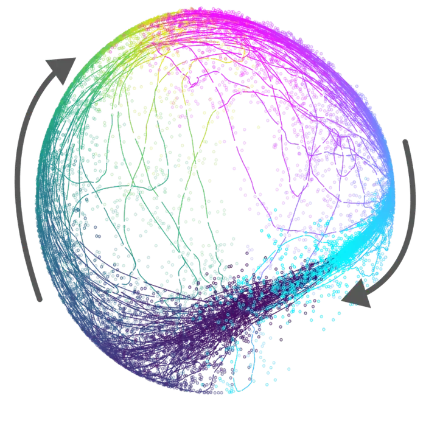
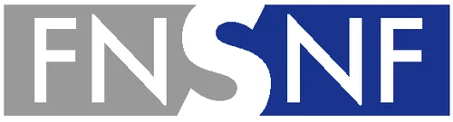
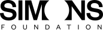
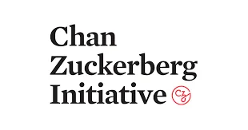
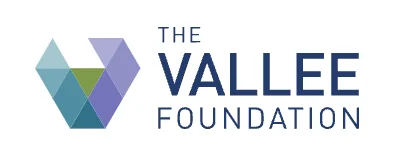
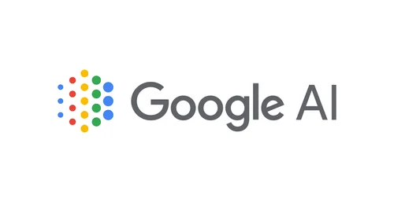
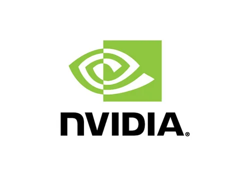
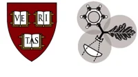

Measure behavior when labels are scarce
Markerless pose estimation, pretrained animal foundation models, 3D lifting from a single camera and multimodal models for action understanding.
Explore computer visionWe study how brains and bodies adapt, and build AI that is robust to the unexpected and interpretable by design.
Computer vision measures behavior, biomechanics models the body that produces it, neural dynamics asks how the brain controls the body and adapts, and machine learning gives us the methods. Robust, interpretable AI runs through all four themes.
Markerless pose estimation, pretrained animal foundation models, 3D lifting from a single camera and multimodal models for action understanding.
Explore computer visionMusculoskeletal models across species, from the mouse to the human arm, plus body-constrained 3D pose, linking movement to muscles and back to the brain.
Explore biomechanics
How brains build and update internal models during skilled motor learning, studied with large-scale recordings and consistent latent embeddings of neural and behavioral data.
Identifiable representations, governing equations recovered from latent dynamics, attribution you can trust, and models that hold up under adversarial and out-of-distribution inputs.
Explore machine learningReal-world behavior is the ultimate stress test for AI. Scarce labels, long-tailed data and constant distribution shift are not edge cases there; they are the norm. Those constraints drive every method we build.
Foundation models and self-supervised learning that measure behavior across species without exhaustive annotation.
Multimodal models that understand rare actions and complex scenes, not just the common cases.
Out-of-distribution robustness and identifiable representations that stay consistent when the world changes.
The equations of motor cortex, learned from spikes.
DYSCO uses multi-view contrastive learning to recover hidden neural trajectories and the dynamics that govern them, then writes those dynamics down as equations you can read.
From brain to muscle, across species.
Behavior is produced by bodies, so we model them. MusBioMaus is a neuro-musculoskeletal model of the mouse that links sensorimotor cortex to individual muscles. Here it re-enacts a real mouse's reach, pull and return.
Also in biomechanics: DeepDraw, human arm models of proprioception (eLife 2023), and AcinoSet, body-constrained 3D pose of cheetahs in the wild (ICRA 2021).
Decoding what a mouse sees, from its neurons.
CEBRA learns consistent latent embeddings of neural activity. Here, embeddings of Neuropixels and two-photon recordings from mouse visual cortex are used to decode which frame of a natural movie the mouse is watching.
We are looking for PhD students, postdocs, engineers and students who want to work at the intersection of machine learning, computer vision, neuroscience and biomechanics.
Our work is made possible by current and past support from:






